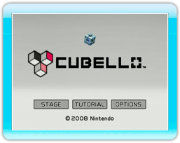

Sélectionnez le titre CUBELLO dans le menu Wii, puis choisissez DÉMARRER sur l’écran de présentation de la chaîne.
L’écran titre apparaîtra. Appuyez sur

ou sur

sur l’écran titre pour afficher le menu principal.
Pointez les différentes options proposées et confirmez en appuyant sur
.
STAGE
(niveaux)
|
Dans ce mode, vous devez détruire tous les cubes du cubello, en ne laissant que son noyau (voir "9. Comment jouer").
Après avoir choisi une section et un niveau, sélectionnez START (démarrer) pour commencer.
Si vous sélectionnez EXIT (quitter), vous reviendrez à l’écran titre.
Note: au fur et à mesure que vous changez de section, le nombre de couleurs du cubello augmente, tout comme la difficulté.
|
ENDLESS
(infini)
|
Dans ce mode,
vous pouvez continuer de détruire des cubes jusqu’à épuisement de votre réserve (voir la section "8. Écrans de jeu").
Une fois que votre réserve est vide,
votre score final est calculé en fonction du nombre de cubes restants sur le cubello.
Essayez d’éliminer le plus de cubes possible pour obtenir un score plus élevé.
Si vous détruisez un cubello entier jusqu’au noyau, un autre cubello apparaît.
Après avoir sélectionné ENDLESS, l’écran de démarrage s’affiche. Sélectionnez START pour commencer le jeu.
|
TUTORIAL
(didacticiel)
|
Visionnez le didacticiel qui vous explique les bases du jeu.
|
|
OPTIONS
|
Réglez la luminosité de l’écran.
|
STAFF CREDITS
(crédits)
|
Visionnez les crédits.
|
Note: vous pourrez sélectionner ENDLESS et STAFF CREDITS lorsque vous aurez réussi un certain nombre de niveaux dans le mode Stage.
● Jouer pour la première fois
Sélectionnez START dans le mode Stage. Dans ce mode, dès que vous réussissez le premier niveau d’une section,
vous avez accès aux deux niveaux suivants ainsi qu’au premier niveau de la section supérieure.
 |
 |
 |
 |
Sauvegarder
Les données du jeu seront automatiquement sauvegardées lorsque vous terminez un niveau,
terminez le jeu ou lorsque vous changez les OPTIONS.
Si vous voulez effacer vos données de sauvegarde,
référez-vous au Mode d'emploi de la Wii. Les données ne pourront pas être récupérées, alors faites attention!
Note: uniquement une donnée de sauvegarde sera sauvegardée à la fois.
|
Attention!
Effectuer l’une des actions ci-dessous pourrait empêcher la sauvegarde de vos
données ou provoquer la perte des données. Les données ne pourront pas être récupérées,
alors faites attention!
-
Éteindre la console Wii ou la télécommande Wii ou la réinitialiser pendant la sauvegarde des données.
-
Déconnecter le bloc d'alimentation de la console Wii en cours de jeu.
|
|
 |
 |
 |
 |